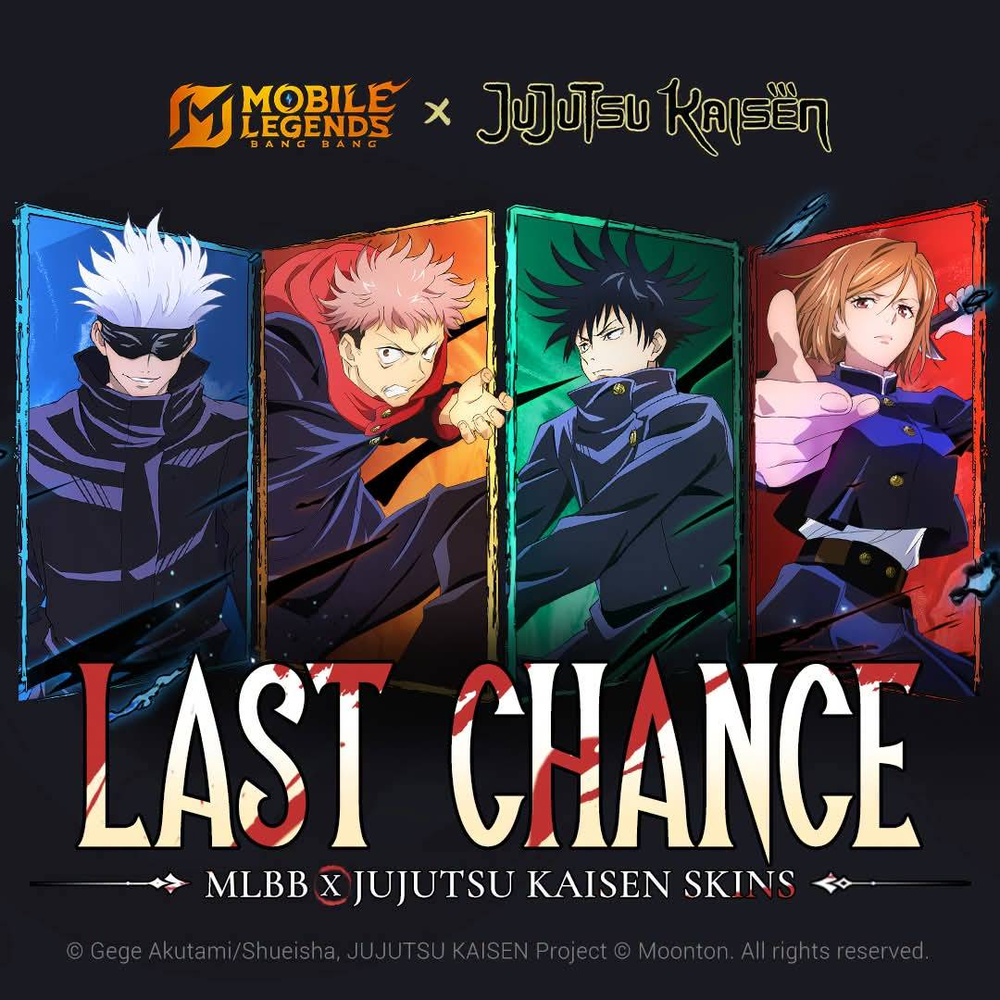

Mobile Legends Article

MLBB JUJUTSU KAISEN 2026 COLLAB IS ENDING, LAST CHANCE TO USE THE FREE TOKENS
The Official MLBB (Mobile Legends Bangbang) has posted a "Last Chance" post in their official social media page to remind players.
Players have been saving the free Cursed Charm tokens they got from Satoru Gojo Training event that just ended last September 3, 2026. Now that the event is ending soon, take the opportunity to get Jujutsu Kaisen skins or other exclusive items before they disappear.
“But, it is with great degree of confidence that he was influenced by the game of Roblox again because of the manner in which he did it. Roblox in itself is not a dangerous game. It is the chat group that is inside it. Doon nagkakaroon ng radicalization (That's where radicalization comes in),” he added.
Players still have a lot of options to claim even with any barely Cursed Charm token. Receiving Jujutsu School Crest in which u can exchange for exclusive items from the Event Shop of MLBB X Jujutsu Kaisen Draw, featuring JJK focused battle emotes for 32 crest, Quick Chat Choice Bundles for 10 crest each and some MLBB items like the Rare skin and Hero Fragments for 1 crest each.
This event is one of the most notable free-to-play event, The game rewards you for sharing the event, participating in social events and by just playing and logging in daily.